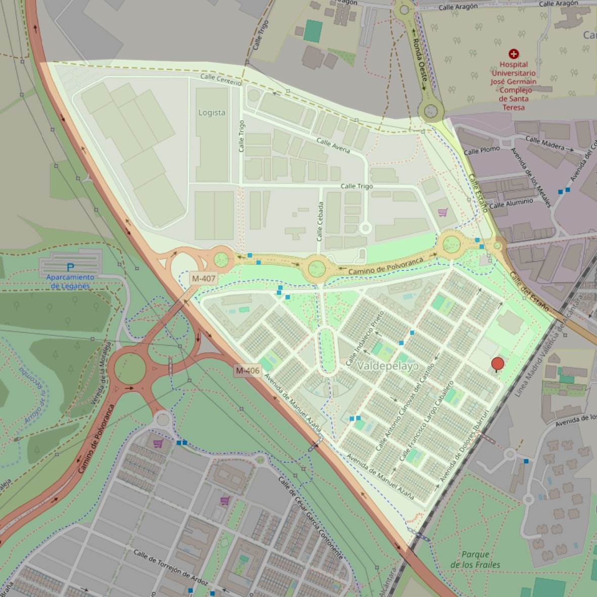

Corpus Christi

- Arciprestazgo
- Leganés
- Población
- Leganés
- Dirección postal
- c/ Diego Martínez Barrio, 2
- Código postal
- 28914
- Extensión
- 0,81 km² (81 ha)
- Teléfono
- 916 936 112
- Correo electrónico
- corpuschristi-leganes@diocesisgetafe.es
Límites territoriales según el decreto
“Partiendo de la confluencia del ferrocarril Madrid-Portugal con la autovía Alcorcón-Leganés (M-406), arrancan por el eje de la autovía Alcorcón-Leganés (M-406; en dirección noroeste); continúan por las calles Centeno y Madera (en dirección sureste; ambas aceras de las calles Centeno y Madera pertenecerán a esta parroquia), por una línea recta imaginaria hasta el ferrocarril Madrid-Portugal (en dirección este) y por el eje de las vías del ferrocarril Madrid-Portugal (en dirección suroeste) hasta la confluencia con la autovía Alcorcón-Leganés, punto de partida” (Decreto de erección de 25-5-2000; Boletín Oficial, Junio-2000, pág. 537-538)